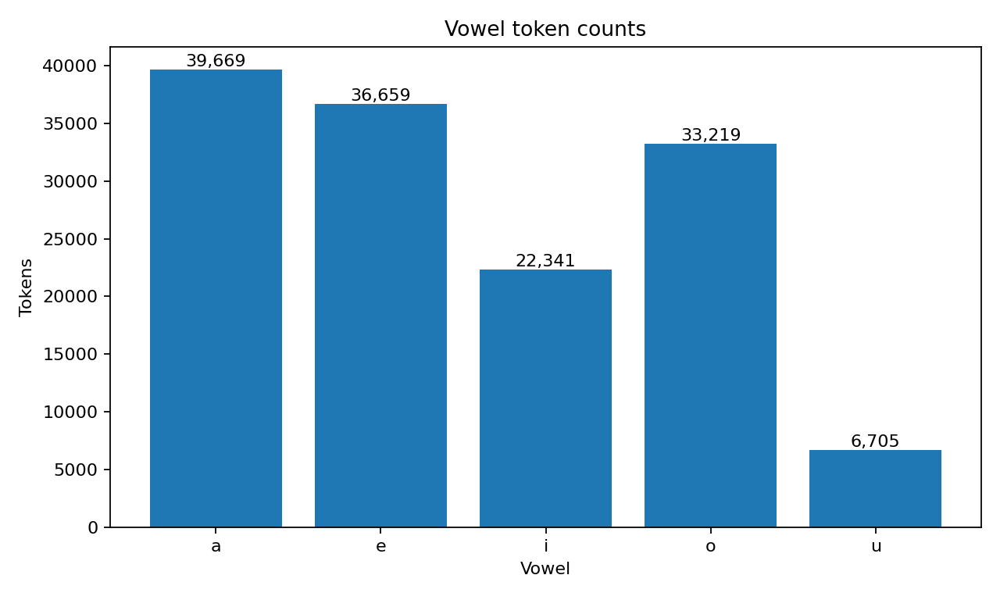
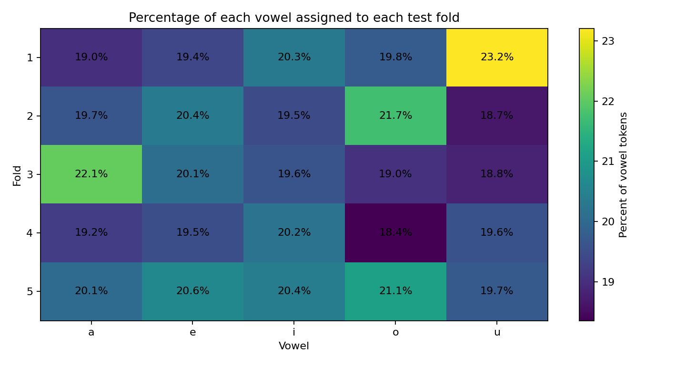
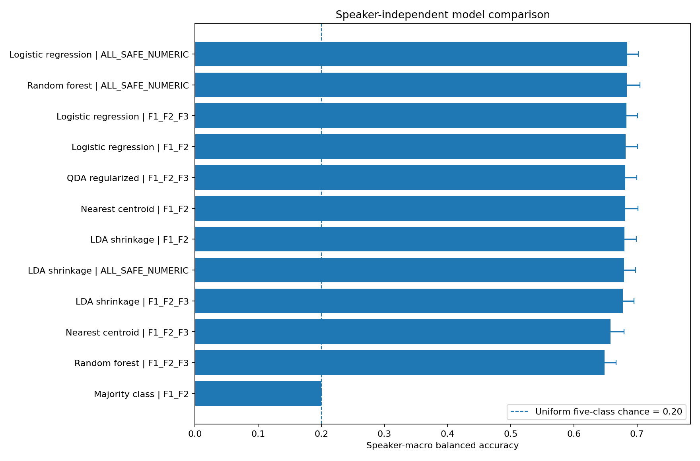
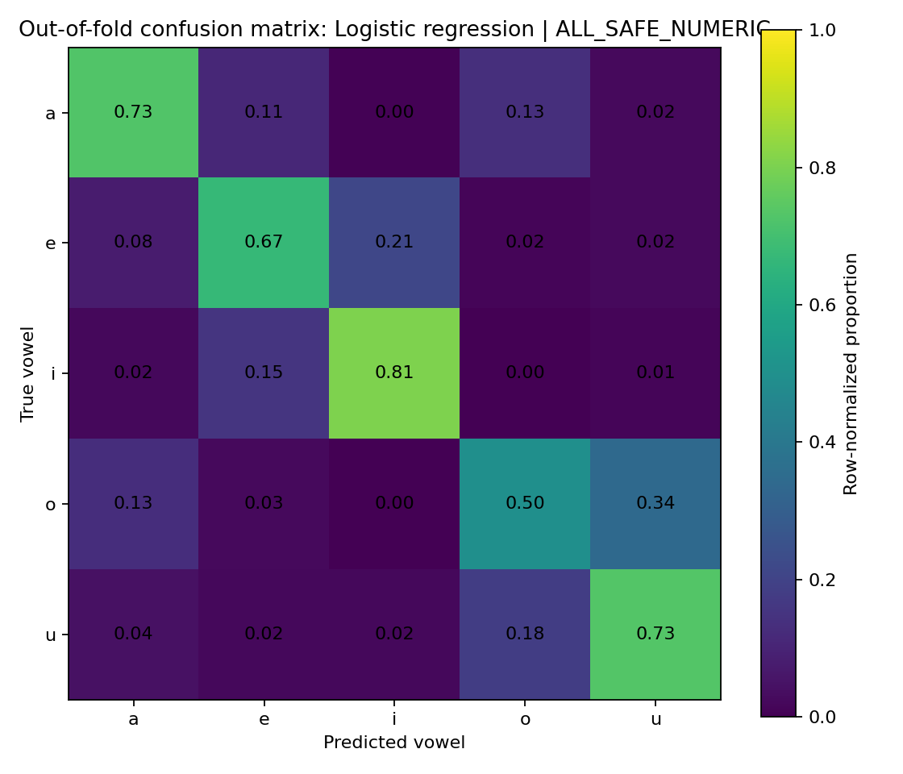
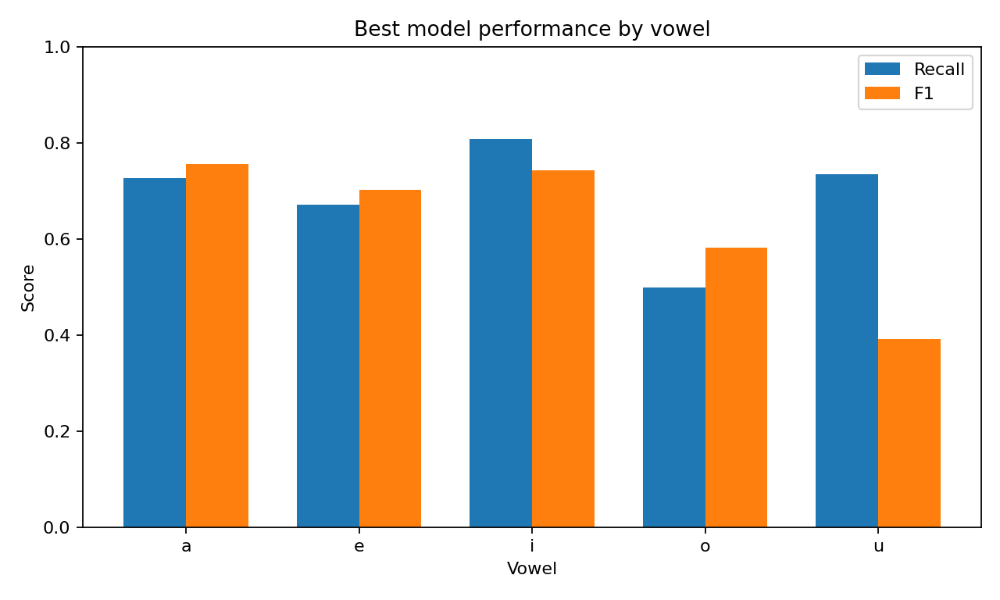
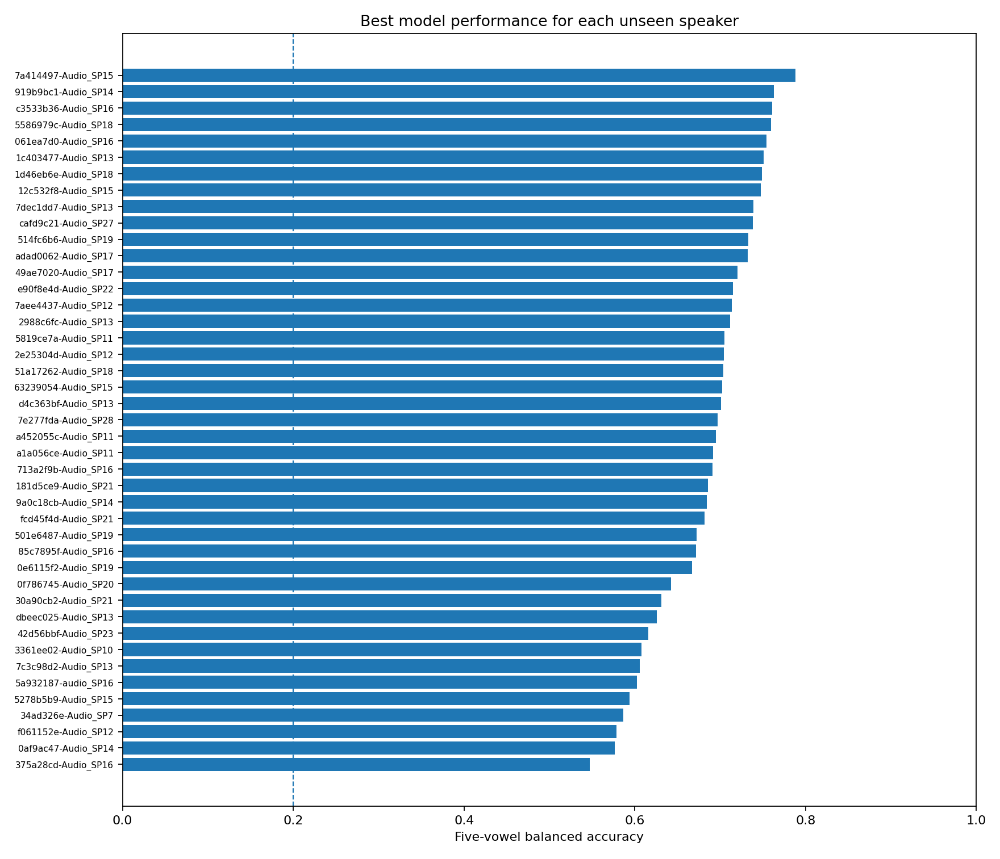

Raw acoustic features; speaker-disjoint, vowel-stratified 5-fold evaluation.
138,593 retained vowel tokens from 43 speaker/audio files.

| vowel | tokens | percent |
|---|---|---|
| a | 39669.0 | 28.6227 |
| e | 36659.0 | 26.4508 |
| i | 22341.0 | 16.1199 |
| o | 33219.0 | 23.9687 |
| u | 6705.0 | 4.8379 |
| file | speaker | status | reason | raw_rows | retained_rows |
|---|---|---|---|---|---|
| 061ea7d0-Audio_SP16.csv | 061ea7d0-Audio_SP16 | loaded | 3042.0 | 2903.0 | |
| 0af9ac47-Audio_SP14.csv | 0af9ac47-Audio_SP14 | loaded | 3609.0 | 3466.0 | |
| 0e6115f2-Audio_SP19.csv | 0e6115f2-Audio_SP19 | loaded | 3653.0 | 3495.0 | |
| 0f786745-Audio_SP20.csv | 0f786745-Audio_SP20 | loaded | 3821.0 | 3677.0 | |
| 12c532f8-Audio_SP15.csv | 12c532f8-Audio_SP15 | loaded | 3409.0 | 3342.0 | |
| 181d5ce9-Audio_SP21.csv | 181d5ce9-Audio_SP21 | loaded | 1757.0 | 1729.0 | |
| 1c403477-Audio_SP13.csv | 1c403477-Audio_SP13 | loaded | 3483.0 | 3321.0 | |
| 1d46eb6e-Audio_SP18.csv | 1d46eb6e-Audio_SP18 | loaded | 5153.0 | 4972.0 | |
| 2988c6fc-Audio_SP13.csv | 2988c6fc-Audio_SP13 | loaded | 2517.0 | 2406.0 | |
| 2e25304d-Audio_SP12.csv | 2e25304d-Audio_SP12 | loaded | 1265.0 | 1234.0 | |
| 30a90cb2-Audio_SP21.csv | 30a90cb2-Audio_SP21 | loaded | 3371.0 | 3151.0 | |
| 3361ee02-Audio_SP10.csv | 3361ee02-Audio_SP10 | loaded | 2307.0 | 2233.0 | |
| 34ad326e-Audio_SP7.csv | 34ad326e-Audio_SP7 | loaded | 1514.0 | 1458.0 | |
| 375a28cd-Audio_SP16.csv | 375a28cd-Audio_SP16 | loaded | 3560.0 | 3445.0 | |
| 42d56bbf-Audio_SP23.csv | 42d56bbf-Audio_SP23 | loaded | 10244.0 | 9770.0 | |
| 49ae7020-Audio_SP17.csv | 49ae7020-Audio_SP17 | loaded | 2472.0 | 2377.0 | |
| 501e6487-Audio_SP19.csv | 501e6487-Audio_SP19 | loaded | 5439.0 | 5259.0 | |
| 514fc6b6-Audio_SP19.csv | 514fc6b6-Audio_SP19 | loaded | 4355.0 | 4227.0 | |
| 51a17262-Audio_SP18.csv | 51a17262-Audio_SP18 | loaded | 2817.0 | 2738.0 | |
| 5278b5b9-Audio_SP15.csv | 5278b5b9-Audio_SP15 | loaded | 2037.0 | 1916.0 | |
| 5586979c-Audio_SP18.csv | 5586979c-Audio_SP18 | loaded | 4385.0 | 4244.0 | |
| 5819ce7a-Audio_SP11.csv | 5819ce7a-Audio_SP11 | loaded | 4050.0 | 3848.0 | |
| 5a932187-audio_SP16.csv | 5a932187-audio_SP16 | loaded | 4126.0 | 3930.0 | |
| 63239054-Audio_SP15.csv | 63239054-Audio_SP15 | loaded | 2771.0 | 2628.0 | |
| 713a2f9b-Audio_SP16.csv | 713a2f9b-Audio_SP16 | loaded | 3358.0 | 3172.0 | |
| 7a414497-Audio_SP15.csv | 7a414497-Audio_SP15 | loaded | 2273.0 | 2137.0 | |
| 7aee4437-Audio_SP12.csv | 7aee4437-Audio_SP12 | loaded | 1711.0 | 1642.0 | |
| 7c3c98d2-Audio_SP13.csv | 7c3c98d2-Audio_SP13 | loaded | 4339.0 | 4155.0 | |
| 7dec1dd7-Audio_SP13.csv | 7dec1dd7-Audio_SP13 | loaded | 2399.0 | 2334.0 | |
| 7e277fda-Audio_SP28.csv | 7e277fda-Audio_SP28 | loaded | 3539.0 | 3383.0 | |
| 85c7895f-Audio_SP16.csv | 85c7895f-Audio_SP16 | loaded | 5987.0 | 5726.0 | |
| 919b9bc1-Audio_SP14.csv | 919b9bc1-Audio_SP14 | loaded | 2220.0 | 2133.0 | |
| 9a0c18cb-Audio_SP14.csv | 9a0c18cb-Audio_SP14 | loaded | 2121.0 | 2033.0 | |
| a1a056ce-Audio_SP11.csv | a1a056ce-Audio_SP11 | loaded | 1705.0 | 1617.0 | |
| a452055c-Audio_SP11.csv | a452055c-Audio_SP11 | loaded | 3994.0 | 3839.0 | |
| adad0062-Audio_SP17.csv | adad0062-Audio_SP17 | loaded | 3893.0 | 3705.0 | |
| c3533b36-Audio_SP16.csv | c3533b36-Audio_SP16 | loaded | 2024.0 | 1959.0 | |
| cafd9c21-Audio_SP27.csv | cafd9c21-Audio_SP27 | loaded | 5198.0 | 4907.0 | |
| d4c363bf-Audio_SP13.csv | d4c363bf-Audio_SP13 | loaded | 3537.0 | 3390.0 | |
| dbeec025-Audio_SP13.csv | dbeec025-Audio_SP13 | loaded | 2814.0 | 2727.0 | |
| e90f8e4d-Audio_SP22.csv | e90f8e4d-Audio_SP22 | loaded | 2622.0 | 2564.0 | |
| f061152e-Audio_SP12.csv | f061152e-Audio_SP12 | loaded | 3019.0 | 2900.0 | |
| fcd45f4d-Audio_SP21.csv | fcd45f4d-Audio_SP21 | loaded | 2573.0 | 2501.0 |
All processing choices are explicit below. Identifier, label, file, recording-position and known processing-setting columns were excluded from the broad feature set. Original B1/B2/B3 columns were replaced by Hz-scale versions when they looked logarithmic.
| feature_set | n_features | features |
|---|---|---|
| F1_F2 | 2.0 | F1, F2 |
| F1_F2_F3 | 3.0 | F1, F2, F3 |
| ALL_SAFE_NUMERIC | 12.0 | F1, F2, F3, B1_Hz, B2_Hz, B3_Hz, chunk_offset, chunk_part, dur, f0, intensity, optimized |
| column | selected_for_all_safe_numeric | reason | numeric_convertible_rate | nonmissing_numeric |
|---|---|---|---|---|
| F1 | True | 1.0000 | 138593.0 | |
| F2 | True | 1.0000 | 138593.0 | |
| F3 | True | 1.0000 | 138593.0 | |
| B1 | False | replaced by converted Hz column | 1.0000 | 138593.0 |
| B2 | False | replaced by converted Hz column | 1.0000 | 138593.0 |
| B3 | False | replaced by converted Hz column | 1.0000 | 138593.0 |
| max_formant | False | identifier, label, recording-position, or processing-setting pattern | 1.0000 | 138593.0 |
| smooth_error | False | identifier, label, recording-position, or processing-setting pattern | 1.0000 | 138593.0 |
| time | False | identifier, label, recording-position, or processing-setting pattern | 1.0000 | 138593.0 |
| rel_time | False | identifier, label, recording-position, or processing-setting pattern | 1.0000 | 138593.0 |
| prop_time | False | identifier, label, recording-position, or processing-setting pattern | 1.0000 | 138593.0 |
| id | False | identifier, label, recording-position, or processing-setting pattern | 0.0000 | 0.0 |
| label | False | identifier, label, recording-position, or processing-setting pattern | 0.0000 | 0.0 |
| file_name | False | identifier, label, recording-position, or processing-setting pattern | 0.0000 | 0.0 |
| group | False | less than 90% numeric among non-missing values (0.0%) | 0.0000 | 0.0 |
| speaker_num | False | identifier, label, recording-position, or processing-setting pattern | 1.0000 | 138593.0 |
| point_heuristic | False | identifier, label, recording-position, or processing-setting pattern | 0.0000 | 0.0 |
| f0 | True | 1.0000 | 137062.0 | |
| intensity | True | 1.0000 | 138593.0 | |
| optimized | True | 1.0000 | 138593.0 | |
| word | False | identifier, label, recording-position, or processing-setting pattern | 0.0001 | 13.0 |
| stress | False | less than 90% numeric among non-missing values (0.0%) | 0.0000 | 0.0 |
| dur | True | 1.0000 | 138593.0 | |
| pre_word | False | identifier, label, recording-position, or processing-setting pattern | 0.0000 | 2.0 |
| fol_word | False | identifier, label, recording-position, or processing-setting pattern | 0.0000 | 5.0 |
| pre_seg | False | less than 90% numeric among non-missing values (0.0%) | 0.0000 | 0.0 |
| fol_seg | False | less than 90% numeric among non-missing values (0.0%) | 0.0000 | 0.0 |
| abs_pre_seg | False | less than 90% numeric among non-missing values (0.0%) | 0.0000 | 0.0 |
| abs_fol_seg | False | less than 90% numeric among non-missing values (0.0%) | 0.0000 | 0.0 |
| context | False | less than 90% numeric among non-missing values (0.0%) | 0.0000 | 0.0 |
| B1_Hz | True | 1.0000 | 138593.0 | |
| B2_Hz | True | 1.0000 | 138593.0 | |
| B3_Hz | True | 1.0000 | 138593.0 | |
| chunk_part | True | 1.0000 | 9770.0 | |
| chunk_offset | True | 1.0000 | 9770.0 | |
| chunk_time | False | identifier, label, recording-position, or processing-setting pattern | 1.0000 | 9770.0 |
| original_chunk_id | False | identifier, label, recording-position, or processing-setting pattern | 0.0000 | 0.0 |
| chunk_file_name | False | identifier, label, recording-position, or processing-setting pattern | 0.0000 | 0.0 |
Selected split seed: 20260727 after examining
100 candidate grouped stratifications.

| fold | train_speakers | test_speakers | speaker_overlap_count | minimum_test_percent | maximum_test_percent |
|---|---|---|---|---|---|
| 1.0 | 35.0 | 8.0 | 0.0 | 18.9997 | 23.2066 |
| 2.0 | 34.0 | 9.0 | 0.0 | 18.6577 | 21.7345 |
| 3.0 | 34.0 | 9.0 | 0.0 | 18.8367 | 22.0600 |
| 4.0 | 35.0 | 8.0 | 0.0 | 18.3540 | 20.1961 |
| 5.0 | 34.0 | 9.0 | 0.0 | 19.7315 | 21.1054 |
| fold | vowel | train_tokens | test_tokens | test_percent_of_vowel | train_speakers | test_speakers | speaker_overlap_count |
|---|---|---|---|---|---|---|---|
| 1.0 | a | 32132.0 | 7537.0 | 18.9997 | 35.0 | 8.0 | 0.0 |
| 1.0 | e | 29555.0 | 7104.0 | 19.3786 | 35.0 | 8.0 | 0.0 |
| 1.0 | i | 17804.0 | 4537.0 | 20.3080 | 35.0 | 8.0 | 0.0 |
| 1.0 | o | 26654.0 | 6565.0 | 19.7628 | 35.0 | 8.0 | 0.0 |
| 1.0 | u | 5149.0 | 1556.0 | 23.2066 | 35.0 | 8.0 | 0.0 |
| 2.0 | a | 31874.0 | 7795.0 | 19.6501 | 34.0 | 9.0 | 0.0 |
| 2.0 | e | 29188.0 | 7471.0 | 20.3797 | 34.0 | 9.0 | 0.0 |
| 2.0 | i | 17990.0 | 4351.0 | 19.4754 | 34.0 | 9.0 | 0.0 |
| 2.0 | o | 25999.0 | 7220.0 | 21.7345 | 34.0 | 9.0 | 0.0 |
| 2.0 | u | 5454.0 | 1251.0 | 18.6577 | 34.0 | 9.0 | 0.0 |
| 3.0 | a | 30918.0 | 8751.0 | 22.0600 | 34.0 | 9.0 | 0.0 |
| 3.0 | e | 29291.0 | 7368.0 | 20.0987 | 34.0 | 9.0 | 0.0 |
| 3.0 | i | 17961.0 | 4380.0 | 19.6052 | 34.0 | 9.0 | 0.0 |
| 3.0 | o | 26893.0 | 6326.0 | 19.0433 | 34.0 | 9.0 | 0.0 |
| 3.0 | u | 5442.0 | 1263.0 | 18.8367 | 34.0 | 9.0 | 0.0 |
| 4.0 | a | 32040.0 | 7629.0 | 19.2316 | 35.0 | 8.0 | 0.0 |
| 4.0 | e | 29501.0 | 7158.0 | 19.5259 | 35.0 | 8.0 | 0.0 |
| 4.0 | i | 17829.0 | 4512.0 | 20.1961 | 35.0 | 8.0 | 0.0 |
| 4.0 | o | 27122.0 | 6097.0 | 18.3540 | 35.0 | 8.0 | 0.0 |
| 4.0 | u | 5393.0 | 1312.0 | 19.5675 | 35.0 | 8.0 | 0.0 |
| 5.0 | a | 31712.0 | 7957.0 | 20.0585 | 34.0 | 9.0 | 0.0 |
| 5.0 | e | 29101.0 | 7558.0 | 20.6170 | 34.0 | 9.0 | 0.0 |
| 5.0 | i | 17780.0 | 4561.0 | 20.4154 | 34.0 | 9.0 | 0.0 |
| 5.0 | o | 26208.0 | 7011.0 | 21.1054 | 34.0 | 9.0 | 0.0 |
| 5.0 | u | 5382.0 | 1323.0 | 19.7315 | 34.0 | 9.0 | 0.0 |
The primary selection metric is speaker-macro balanced accuracy: five-vowel recall is calculated separately for each unseen speaker, then speakers receive equal weight. The dashed line at 0.20 is the uniform five-class reference level.

| config_id | model | feature_set | n_features | n_oof_tokens | n_oof_speakers | accuracy_oof | balanced_accuracy_oof | macro_f1_oof | speaker_macro_accuracy | speaker_macro_balanced_accuracy | speaker_macro_balanced_ci_low | speaker_macro_balanced_ci_high | speaker_macro_f1 | fold_balanced_accuracy_mean | fold_balanced_accuracy_sd | fold_macro_f1_mean | fold_macro_f1_sd | status |
|---|---|---|---|---|---|---|---|---|---|---|---|---|---|---|---|---|---|---|
| Logistic regression__ALL_SAFE_NUMERIC | Logistic regression | ALL_SAFE_NUMERIC | 12.0 | 138593.0 | 43.0 | 0.6709 | 0.6878 | 0.6347 | 0.6782 | 0.6847 | 0.6667 | 0.7021 | 0.6415 | 0.6855 | 0.0294 | 0.6352 | 0.0434 | OK |
| Random forest__ALL_SAFE_NUMERIC | Random forest | ALL_SAFE_NUMERIC | 12.0 | 138593.0 | 43.0 | 0.7550 | 0.6951 | 0.7007 | 0.7596 | 0.6842 | 0.6644 | 0.7047 | 0.6862 | 0.6932 | 0.0241 | 0.6985 | 0.0241 | OK |
| Logistic regression__F1_F2_F3 | Logistic regression | F1_F2_F3 | 3.0 | 138593.0 | 43.0 | 0.6771 | 0.6848 | 0.6380 | 0.6856 | 0.6833 | 0.6654 | 0.7008 | 0.6464 | 0.6825 | 0.0268 | 0.6384 | 0.0457 | OK |
| Logistic regression__F1_F2 | Logistic regression | F1_F2 | 2.0 | 138593.0 | 43.0 | 0.6751 | 0.6824 | 0.6361 | 0.6870 | 0.6823 | 0.6634 | 0.7009 | 0.6454 | 0.6798 | 0.0294 | 0.6361 | 0.0521 | OK |
| QDA regularized__F1_F2_F3 | QDA regularized | F1_F2_F3 | 3.0 | 138593.0 | 43.0 | 0.6995 | 0.6862 | 0.6580 | 0.7068 | 0.6815 | 0.6635 | 0.6995 | 0.6592 | 0.6835 | 0.0232 | 0.6577 | 0.0413 | OK |
| Nearest centroid__F1_F2 | Nearest centroid | F1_F2 | 2.0 | 138593.0 | 43.0 | 0.6688 | 0.6811 | 0.6316 | 0.6813 | 0.6811 | 0.6606 | 0.7016 | 0.6413 | 0.6785 | 0.0351 | 0.6316 | 0.0566 | OK |
| LDA shrinkage__F1_F2 | LDA shrinkage | F1_F2 | 2.0 | 138593.0 | 43.0 | 0.6712 | 0.6803 | 0.6328 | 0.6823 | 0.6800 | 0.6609 | 0.6992 | 0.6411 | 0.6779 | 0.0343 | 0.6330 | 0.0556 | OK |
| LDA shrinkage__ALL_SAFE_NUMERIC | LDA shrinkage | ALL_SAFE_NUMERIC | 12.0 | 138593.0 | 43.0 | 0.6645 | 0.6793 | 0.6281 | 0.6748 | 0.6795 | 0.6598 | 0.6979 | 0.6363 | 0.6769 | 0.0350 | 0.6281 | 0.0523 | OK |
| LDA shrinkage__F1_F2_F3 | LDA shrinkage | F1_F2_F3 | 3.0 | 138593.0 | 43.0 | 0.6696 | 0.6787 | 0.6305 | 0.6775 | 0.6777 | 0.6592 | 0.6955 | 0.6382 | 0.6767 | 0.0365 | 0.6312 | 0.0555 | OK |
| Nearest centroid__F1_F2_F3 | Nearest centroid | F1_F2_F3 | 3.0 | 138593.0 | 43.0 | 0.6474 | 0.6586 | 0.6111 | 0.6595 | 0.6581 | 0.6368 | 0.6798 | 0.6195 | 0.6558 | 0.0357 | 0.6107 | 0.0594 | OK |
| Random forest__F1_F2_F3 | Random forest | F1_F2_F3 | 3.0 | 138593.0 | 43.0 | 0.7265 | 0.6570 | 0.6620 | 0.7320 | 0.6487 | 0.6304 | 0.6668 | 0.6522 | 0.6548 | 0.0212 | 0.6590 | 0.0169 | OK |
| Majority class__F1_F2 | Majority class | F1_F2 | 2.0 | 138593.0 | 43.0 | 0.2862 | 0.2000 | 0.0890 | 0.2883 | 0.2000 | 0.2000 | 0.2000 | 0.0894 | 0.2000 | 0.0000 | 0.0890 | 0.0035 | OK |
| config_id | model | feature_set | fold | train_tokens | test_tokens | train_speakers | test_speakers | accuracy | balanced_accuracy | macro_f1 |
|---|---|---|---|---|---|---|---|---|---|---|
| Majority class__F1_F2 | Majority class | F1_F2 | 1.0 | 111294.0 | 27299.0 | 35.0 | 8.0 | 0.2761 | 0.2000 | 0.0865 |
| Majority class__F1_F2 | Majority class | F1_F2 | 2.0 | 110505.0 | 28088.0 | 34.0 | 9.0 | 0.2775 | 0.2000 | 0.0869 |
| Majority class__F1_F2 | Majority class | F1_F2 | 3.0 | 110505.0 | 28088.0 | 34.0 | 9.0 | 0.3116 | 0.2000 | 0.0950 |
| Majority class__F1_F2 | Majority class | F1_F2 | 4.0 | 111885.0 | 26708.0 | 35.0 | 8.0 | 0.2856 | 0.2000 | 0.0889 |
| Majority class__F1_F2 | Majority class | F1_F2 | 5.0 | 110183.0 | 28410.0 | 34.0 | 9.0 | 0.2801 | 0.2000 | 0.0875 |
| Nearest centroid__F1_F2 | Nearest centroid | F1_F2 | 1.0 | 111294.0 | 27299.0 | 35.0 | 8.0 | 0.5674 | 0.6297 | 0.5468 |
| Nearest centroid__F1_F2 | Nearest centroid | F1_F2 | 2.0 | 110505.0 | 28088.0 | 34.0 | 9.0 | 0.6554 | 0.6661 | 0.6137 |
| Nearest centroid__F1_F2 | Nearest centroid | F1_F2 | 3.0 | 110505.0 | 28088.0 | 34.0 | 9.0 | 0.7042 | 0.6865 | 0.6659 |
| Nearest centroid__F1_F2 | Nearest centroid | F1_F2 | 4.0 | 111885.0 | 26708.0 | 35.0 | 8.0 | 0.6706 | 0.6838 | 0.6355 |
| Nearest centroid__F1_F2 | Nearest centroid | F1_F2 | 5.0 | 110183.0 | 28410.0 | 34.0 | 9.0 | 0.7429 | 0.7263 | 0.6959 |
| LDA shrinkage__F1_F2 | LDA shrinkage | F1_F2 | 1.0 | 111294.0 | 27299.0 | 35.0 | 8.0 | 0.5718 | 0.6299 | 0.5503 |
| LDA shrinkage__F1_F2 | LDA shrinkage | F1_F2 | 2.0 | 110505.0 | 28088.0 | 34.0 | 9.0 | 0.6562 | 0.6639 | 0.6133 |
| LDA shrinkage__F1_F2 | LDA shrinkage | F1_F2 | 3.0 | 110505.0 | 28088.0 | 34.0 | 9.0 | 0.7133 | 0.6929 | 0.6744 |
| LDA shrinkage__F1_F2 | LDA shrinkage | F1_F2 | 4.0 | 111885.0 | 26708.0 | 35.0 | 8.0 | 0.6729 | 0.6802 | 0.6357 |
| LDA shrinkage__F1_F2 | LDA shrinkage | F1_F2 | 5.0 | 110183.0 | 28410.0 | 34.0 | 9.0 | 0.7381 | 0.7225 | 0.6914 |
| Logistic regression__F1_F2 | Logistic regression | F1_F2 | 1.0 | 111294.0 | 27299.0 | 35.0 | 8.0 | 0.5790 | 0.6381 | 0.5580 |
| Logistic regression__F1_F2 | Logistic regression | F1_F2 | 2.0 | 110505.0 | 28088.0 | 34.0 | 9.0 | 0.6632 | 0.6705 | 0.6208 |
| Logistic regression__F1_F2 | Logistic regression | F1_F2 | 3.0 | 110505.0 | 28088.0 | 34.0 | 9.0 | 0.7144 | 0.6907 | 0.6733 |
| Logistic regression__F1_F2 | Logistic regression | F1_F2 | 4.0 | 111885.0 | 26708.0 | 35.0 | 8.0 | 0.6755 | 0.6813 | 0.6366 |
| Logistic regression__F1_F2 | Logistic regression | F1_F2 | 5.0 | 110183.0 | 28410.0 | 34.0 | 9.0 | 0.7400 | 0.7186 | 0.6920 |
| Nearest centroid__F1_F2_F3 | Nearest centroid | F1_F2_F3 | 1.0 | 111294.0 | 27299.0 | 35.0 | 8.0 | 0.5465 | 0.6119 | 0.5280 |
| Nearest centroid__F1_F2_F3 | Nearest centroid | F1_F2_F3 | 2.0 | 110505.0 | 28088.0 | 34.0 | 9.0 | 0.6326 | 0.6434 | 0.5920 |
| Nearest centroid__F1_F2_F3 | Nearest centroid | F1_F2_F3 | 3.0 | 110505.0 | 28088.0 | 34.0 | 9.0 | 0.6953 | 0.6708 | 0.6541 |
| Nearest centroid__F1_F2_F3 | Nearest centroid | F1_F2_F3 | 4.0 | 111885.0 | 26708.0 | 35.0 | 8.0 | 0.6301 | 0.6451 | 0.5987 |
| Nearest centroid__F1_F2_F3 | Nearest centroid | F1_F2_F3 | 5.0 | 110183.0 | 28410.0 | 34.0 | 9.0 | 0.7278 | 0.7075 | 0.6807 |
| LDA shrinkage__F1_F2_F3 | LDA shrinkage | F1_F2_F3 | 1.0 | 111294.0 | 27299.0 | 35.0 | 8.0 | 0.5758 | 0.6340 | 0.5535 |
| LDA shrinkage__F1_F2_F3 | LDA shrinkage | F1_F2_F3 | 2.0 | 110505.0 | 28088.0 | 34.0 | 9.0 | 0.6343 | 0.6443 | 0.5923 |
| LDA shrinkage__F1_F2_F3 | LDA shrinkage | F1_F2_F3 | 3.0 | 110505.0 | 28088.0 | 34.0 | 9.0 | 0.7050 | 0.6852 | 0.6648 |
| LDA shrinkage__F1_F2_F3 | LDA shrinkage | F1_F2_F3 | 4.0 | 111885.0 | 26708.0 | 35.0 | 8.0 | 0.7002 | 0.7006 | 0.6616 |
| LDA shrinkage__F1_F2_F3 | LDA shrinkage | F1_F2_F3 | 5.0 | 110183.0 | 28410.0 | 34.0 | 9.0 | 0.7308 | 0.7191 | 0.6835 |
| QDA regularized__F1_F2_F3 | QDA regularized | F1_F2_F3 | 1.0 | 111294.0 | 27299.0 | 35.0 | 8.0 | 0.6284 | 0.6689 | 0.6055 |
| QDA regularized__F1_F2_F3 | QDA regularized | F1_F2_F3 | 2.0 | 110505.0 | 28088.0 | 34.0 | 9.0 | 0.6738 | 0.6642 | 0.6305 |
| QDA regularized__F1_F2_F3 | QDA regularized | F1_F2_F3 | 3.0 | 110505.0 | 28088.0 | 34.0 | 9.0 | 0.7176 | 0.6723 | 0.6726 |
| QDA regularized__F1_F2_F3 | QDA regularized | F1_F2_F3 | 4.0 | 111885.0 | 26708.0 | 35.0 | 8.0 | 0.7090 | 0.6919 | 0.6673 |
| QDA regularized__F1_F2_F3 | QDA regularized | F1_F2_F3 | 5.0 | 110183.0 | 28410.0 | 34.0 | 9.0 | 0.7663 | 0.7205 | 0.7127 |
| Logistic regression__F1_F2_F3 | Logistic regression | F1_F2_F3 | 1.0 | 111294.0 | 27299.0 | 35.0 | 8.0 | 0.5921 | 0.6484 | 0.5705 |
| Logistic regression__F1_F2_F3 | Logistic regression | F1_F2_F3 | 2.0 | 110505.0 | 28088.0 | 34.0 | 9.0 | 0.6554 | 0.6641 | 0.6153 |
| Logistic regression__F1_F2_F3 | Logistic regression | F1_F2_F3 | 3.0 | 110505.0 | 28088.0 | 34.0 | 9.0 | 0.7077 | 0.6862 | 0.6665 |
| Logistic regression__F1_F2_F3 | Logistic regression | F1_F2_F3 | 4.0 | 111885.0 | 26708.0 | 35.0 | 8.0 | 0.6956 | 0.6974 | 0.6544 |
| Logistic regression__F1_F2_F3 | Logistic regression | F1_F2_F3 | 5.0 | 110183.0 | 28410.0 | 34.0 | 9.0 | 0.7327 | 0.7164 | 0.6851 |
| LDA shrinkage__ALL_SAFE_NUMERIC | LDA shrinkage | ALL_SAFE_NUMERIC | 1.0 | 111294.0 | 27299.0 | 35.0 | 8.0 | 0.5811 | 0.6446 | 0.5613 |
| LDA shrinkage__ALL_SAFE_NUMERIC | LDA shrinkage | ALL_SAFE_NUMERIC | 2.0 | 110505.0 | 28088.0 | 34.0 | 9.0 | 0.6277 | 0.6440 | 0.5893 |
| LDA shrinkage__ALL_SAFE_NUMERIC | LDA shrinkage | ALL_SAFE_NUMERIC | 3.0 | 110505.0 | 28088.0 | 34.0 | 9.0 | 0.7032 | 0.6777 | 0.6626 |
| LDA shrinkage__ALL_SAFE_NUMERIC | LDA shrinkage | ALL_SAFE_NUMERIC | 4.0 | 111885.0 | 26708.0 | 35.0 | 8.0 | 0.6749 | 0.6906 | 0.6389 |
| LDA shrinkage__ALL_SAFE_NUMERIC | LDA shrinkage | ALL_SAFE_NUMERIC | 5.0 | 110183.0 | 28410.0 | 34.0 | 9.0 | 0.7332 | 0.7278 | 0.6886 |
| Logistic regression__ALL_SAFE_NUMERIC | Logistic regression | ALL_SAFE_NUMERIC | 1.0 | 111294.0 | 27299.0 | 35.0 | 8.0 | 0.6065 | 0.6632 | 0.5855 |
| Logistic regression__ALL_SAFE_NUMERIC | Logistic regression | ALL_SAFE_NUMERIC | 2.0 | 110505.0 | 28088.0 | 34.0 | 9.0 | 0.6392 | 0.6563 | 0.6012 |
| Logistic regression__ALL_SAFE_NUMERIC | Logistic regression | ALL_SAFE_NUMERIC | 3.0 | 110505.0 | 28088.0 | 34.0 | 9.0 | 0.7050 | 0.6877 | 0.6666 |
| Logistic regression__ALL_SAFE_NUMERIC | Logistic regression | ALL_SAFE_NUMERIC | 4.0 | 111885.0 | 26708.0 | 35.0 | 8.0 | 0.6707 | 0.6892 | 0.6336 |
| Logistic regression__ALL_SAFE_NUMERIC | Logistic regression | ALL_SAFE_NUMERIC | 5.0 | 110183.0 | 28410.0 | 34.0 | 9.0 | 0.7308 | 0.7313 | 0.6892 |
| Random forest__F1_F2_F3 | Random forest | F1_F2_F3 | 1.0 | 111294.0 | 27299.0 | 35.0 | 8.0 | 0.7002 | 0.6788 | 0.6593 |
| Random forest__F1_F2_F3 | Random forest | F1_F2_F3 | 2.0 | 110505.0 | 28088.0 | 34.0 | 9.0 | 0.7191 | 0.6474 | 0.6531 |
| Random forest__F1_F2_F3 | Random forest | F1_F2_F3 | 3.0 | 110505.0 | 28088.0 | 34.0 | 9.0 | 0.7168 | 0.6253 | 0.6391 |
| Random forest__F1_F2_F3 | Random forest | F1_F2_F3 | 4.0 | 111885.0 | 26708.0 | 35.0 | 8.0 | 0.7260 | 0.6507 | 0.6577 |
| Random forest__F1_F2_F3 | Random forest | F1_F2_F3 | 5.0 | 110183.0 | 28410.0 | 34.0 | 9.0 | 0.7692 | 0.6716 | 0.6856 |
| Random forest__ALL_SAFE_NUMERIC | Random forest | ALL_SAFE_NUMERIC | 1.0 | 111294.0 | 27299.0 | 35.0 | 8.0 | 0.7285 | 0.7127 | 0.6924 |
| Random forest__ALL_SAFE_NUMERIC | Random forest | ALL_SAFE_NUMERIC | 2.0 | 110505.0 | 28088.0 | 34.0 | 9.0 | 0.7370 | 0.6803 | 0.6813 |
| Random forest__ALL_SAFE_NUMERIC | Random forest | ALL_SAFE_NUMERIC | 3.0 | 110505.0 | 28088.0 | 34.0 | 9.0 | 0.7481 | 0.6603 | 0.6763 |
| Random forest__ALL_SAFE_NUMERIC | Random forest | ALL_SAFE_NUMERIC | 4.0 | 111885.0 | 26708.0 | 35.0 | 8.0 | 0.7602 | 0.6928 | 0.7059 |
| Random forest__ALL_SAFE_NUMERIC | Random forest | ALL_SAFE_NUMERIC | 5.0 | 110183.0 | 28410.0 | 34.0 | 9.0 | 0.8004 | 0.7196 | 0.7364 |
Logistic regression — ALL_SAFE_NUMERIC


| config_id | model | feature_set | vowel | precision | recall | f1 | support |
|---|---|---|---|---|---|---|---|
| Logistic regression__ALL_SAFE_NUMERIC | Logistic regression | ALL_SAFE_NUMERIC | a | 0.7858 | 0.7267 | 0.7551 | 39669.0 |
| Logistic regression__ALL_SAFE_NUMERIC | Logistic regression | ALL_SAFE_NUMERIC | e | 0.7353 | 0.6710 | 0.7017 | 36659.0 |
| Logistic regression__ALL_SAFE_NUMERIC | Logistic regression | ALL_SAFE_NUMERIC | i | 0.6867 | 0.8082 | 0.7425 | 22341.0 |
| Logistic regression__ALL_SAFE_NUMERIC | Logistic regression | ALL_SAFE_NUMERIC | o | 0.6990 | 0.4992 | 0.5825 | 33219.0 |
| Logistic regression__ALL_SAFE_NUMERIC | Logistic regression | ALL_SAFE_NUMERIC | u | 0.2669 | 0.7339 | 0.3915 | 6705.0 |

| config_id | model | feature_set | speaker | n_tokens | accuracy | balanced_accuracy | macro_f1 | n_true_vowels_present |
|---|---|---|---|---|---|---|---|---|
| Logistic regression__ALL_SAFE_NUMERIC | Logistic regression | ALL_SAFE_NUMERIC | 061ea7d0-Audio_SP16 | 2903.0 | 0.7957 | 0.7540 | 0.7497 | 5.0 |
| Logistic regression__ALL_SAFE_NUMERIC | Logistic regression | ALL_SAFE_NUMERIC | 0af9ac47-Audio_SP14 | 3466.0 | 0.6777 | 0.5765 | 0.5948 | 5.0 |
| Logistic regression__ALL_SAFE_NUMERIC | Logistic regression | ALL_SAFE_NUMERIC | 0e6115f2-Audio_SP19 | 3495.0 | 0.6229 | 0.6673 | 0.5842 | 5.0 |
| Logistic regression__ALL_SAFE_NUMERIC | Logistic regression | ALL_SAFE_NUMERIC | 0f786745-Audio_SP20 | 3677.0 | 0.5602 | 0.6422 | 0.5695 | 5.0 |
| Logistic regression__ALL_SAFE_NUMERIC | Logistic regression | ALL_SAFE_NUMERIC | 12c532f8-Audio_SP15 | 3342.0 | 0.7439 | 0.7474 | 0.7030 | 5.0 |
| Logistic regression__ALL_SAFE_NUMERIC | Logistic regression | ALL_SAFE_NUMERIC | 181d5ce9-Audio_SP21 | 1729.0 | 0.6287 | 0.6854 | 0.6005 | 5.0 |
| Logistic regression__ALL_SAFE_NUMERIC | Logistic regression | ALL_SAFE_NUMERIC | 1c403477-Audio_SP13 | 3321.0 | 0.7004 | 0.7511 | 0.6647 | 5.0 |
| Logistic regression__ALL_SAFE_NUMERIC | Logistic regression | ALL_SAFE_NUMERIC | 1d46eb6e-Audio_SP18 | 4972.0 | 0.7416 | 0.7490 | 0.7014 | 5.0 |
| Logistic regression__ALL_SAFE_NUMERIC | Logistic regression | ALL_SAFE_NUMERIC | 2988c6fc-Audio_SP13 | 2406.0 | 0.6978 | 0.7116 | 0.6484 | 5.0 |
| Logistic regression__ALL_SAFE_NUMERIC | Logistic regression | ALL_SAFE_NUMERIC | 2e25304d-Audio_SP12 | 1234.0 | 0.7650 | 0.7043 | 0.7271 | 5.0 |
| Logistic regression__ALL_SAFE_NUMERIC | Logistic regression | ALL_SAFE_NUMERIC | 30a90cb2-Audio_SP21 | 3151.0 | 0.5779 | 0.6309 | 0.5483 | 5.0 |
| Logistic regression__ALL_SAFE_NUMERIC | Logistic regression | ALL_SAFE_NUMERIC | 3361ee02-Audio_SP10 | 2233.0 | 0.6050 | 0.6076 | 0.5697 | 5.0 |
| Logistic regression__ALL_SAFE_NUMERIC | Logistic regression | ALL_SAFE_NUMERIC | 34ad326e-Audio_SP7 | 1458.0 | 0.5405 | 0.5867 | 0.5156 | 5.0 |
| Logistic regression__ALL_SAFE_NUMERIC | Logistic regression | ALL_SAFE_NUMERIC | 375a28cd-Audio_SP16 | 3445.0 | 0.4630 | 0.5472 | 0.4432 | 5.0 |
| Logistic regression__ALL_SAFE_NUMERIC | Logistic regression | ALL_SAFE_NUMERIC | 42d56bbf-Audio_SP23 | 9770.0 | 0.5298 | 0.6161 | 0.5138 | 5.0 |
| Logistic regression__ALL_SAFE_NUMERIC | Logistic regression | ALL_SAFE_NUMERIC | 49ae7020-Audio_SP17 | 2377.0 | 0.7758 | 0.7204 | 0.7290 | 5.0 |
| Logistic regression__ALL_SAFE_NUMERIC | Logistic regression | ALL_SAFE_NUMERIC | 501e6487-Audio_SP19 | 5259.0 | 0.6480 | 0.6726 | 0.6085 | 5.0 |
| Logistic regression__ALL_SAFE_NUMERIC | Logistic regression | ALL_SAFE_NUMERIC | 514fc6b6-Audio_SP19 | 4227.0 | 0.7353 | 0.7330 | 0.7083 | 5.0 |
| Logistic regression__ALL_SAFE_NUMERIC | Logistic regression | ALL_SAFE_NUMERIC | 51a17262-Audio_SP18 | 2738.0 | 0.7016 | 0.7038 | 0.6556 | 5.0 |
| Logistic regression__ALL_SAFE_NUMERIC | Logistic regression | ALL_SAFE_NUMERIC | 5278b5b9-Audio_SP15 | 1916.0 | 0.5167 | 0.5941 | 0.4908 | 5.0 |
| Logistic regression__ALL_SAFE_NUMERIC | Logistic regression | ALL_SAFE_NUMERIC | 5586979c-Audio_SP18 | 4244.0 | 0.8014 | 0.7597 | 0.7293 | 5.0 |
| Logistic regression__ALL_SAFE_NUMERIC | Logistic regression | ALL_SAFE_NUMERIC | 5819ce7a-Audio_SP11 | 3848.0 | 0.7739 | 0.7046 | 0.7104 | 5.0 |
| Logistic regression__ALL_SAFE_NUMERIC | Logistic regression | ALL_SAFE_NUMERIC | 5a932187-audio_SP16 | 3930.0 | 0.6601 | 0.6026 | 0.6191 | 5.0 |
| Logistic regression__ALL_SAFE_NUMERIC | Logistic regression | ALL_SAFE_NUMERIC | 63239054-Audio_SP15 | 2628.0 | 0.7013 | 0.7026 | 0.6534 | 5.0 |
| Logistic regression__ALL_SAFE_NUMERIC | Logistic regression | ALL_SAFE_NUMERIC | 713a2f9b-Audio_SP16 | 3172.0 | 0.6349 | 0.6908 | 0.6189 | 5.0 |
| Logistic regression__ALL_SAFE_NUMERIC | Logistic regression | ALL_SAFE_NUMERIC | 7a414497-Audio_SP15 | 2137.0 | 0.7978 | 0.7881 | 0.7719 | 5.0 |
| Logistic regression__ALL_SAFE_NUMERIC | Logistic regression | ALL_SAFE_NUMERIC | 7aee4437-Audio_SP12 | 1642.0 | 0.7570 | 0.7137 | 0.7232 | 5.0 |
| Logistic regression__ALL_SAFE_NUMERIC | Logistic regression | ALL_SAFE_NUMERIC | 7c3c98d2-Audio_SP13 | 4155.0 | 0.6366 | 0.6057 | 0.5802 | 5.0 |
| Logistic regression__ALL_SAFE_NUMERIC | Logistic regression | ALL_SAFE_NUMERIC | 7dec1dd7-Audio_SP13 | 2334.0 | 0.7609 | 0.7389 | 0.7315 | 5.0 |
| Logistic regression__ALL_SAFE_NUMERIC | Logistic regression | ALL_SAFE_NUMERIC | 7e277fda-Audio_SP28 | 3383.0 | 0.7029 | 0.6971 | 0.6771 | 5.0 |
| Logistic regression__ALL_SAFE_NUMERIC | Logistic regression | ALL_SAFE_NUMERIC | 85c7895f-Audio_SP16 | 5726.0 | 0.6149 | 0.6718 | 0.5699 | 5.0 |
| Logistic regression__ALL_SAFE_NUMERIC | Logistic regression | ALL_SAFE_NUMERIC | 919b9bc1-Audio_SP14 | 2133.0 | 0.7665 | 0.7626 | 0.7296 | 5.0 |
| Logistic regression__ALL_SAFE_NUMERIC | Logistic regression | ALL_SAFE_NUMERIC | 9a0c18cb-Audio_SP14 | 2033.0 | 0.6680 | 0.6842 | 0.6362 | 5.0 |
| Logistic regression__ALL_SAFE_NUMERIC | Logistic regression | ALL_SAFE_NUMERIC | a1a056ce-Audio_SP11 | 1617.0 | 0.6376 | 0.6915 | 0.5879 | 5.0 |
| Logistic regression__ALL_SAFE_NUMERIC | Logistic regression | ALL_SAFE_NUMERIC | a452055c-Audio_SP11 | 3839.0 | 0.6476 | 0.6947 | 0.6251 | 5.0 |
| Logistic regression__ALL_SAFE_NUMERIC | Logistic regression | ALL_SAFE_NUMERIC | adad0062-Audio_SP17 | 3705.0 | 0.7436 | 0.7320 | 0.6997 | 5.0 |
| Logistic regression__ALL_SAFE_NUMERIC | Logistic regression | ALL_SAFE_NUMERIC | c3533b36-Audio_SP16 | 1959.0 | 0.7912 | 0.7607 | 0.7506 | 5.0 |
| Logistic regression__ALL_SAFE_NUMERIC | Logistic regression | ALL_SAFE_NUMERIC | cafd9c21-Audio_SP27 | 4907.0 | 0.7536 | 0.7385 | 0.7144 | 5.0 |
| Logistic regression__ALL_SAFE_NUMERIC | Logistic regression | ALL_SAFE_NUMERIC | d4c363bf-Audio_SP13 | 3390.0 | 0.6773 | 0.7011 | 0.6431 | 5.0 |
| Logistic regression__ALL_SAFE_NUMERIC | Logistic regression | ALL_SAFE_NUMERIC | dbeec025-Audio_SP13 | 2727.0 | 0.6439 | 0.6255 | 0.6343 | 5.0 |
| Logistic regression__ALL_SAFE_NUMERIC | Logistic regression | ALL_SAFE_NUMERIC | e90f8e4d-Audio_SP22 | 2564.0 | 0.6658 | 0.7149 | 0.6378 | 5.0 |
| Logistic regression__ALL_SAFE_NUMERIC | Logistic regression | ALL_SAFE_NUMERIC | f061152e-Audio_SP12 | 2900.0 | 0.6634 | 0.5782 | 0.5956 | 5.0 |
| Logistic regression__ALL_SAFE_NUMERIC | Logistic regression | ALL_SAFE_NUMERIC | fcd45f4d-Audio_SP21 | 2501.0 | 0.6345 | 0.6815 | 0.6170 | 5.0 |
The selected pipeline was refitted on all available speakers and saved as:
/home/pires/projects/speech-research/results/vowel_classification_raw/best_vowel_classifier.joblib
Its feature and class definitions are stored in best_model_metadata.json. This final
fit is intended for later prediction on new data; its performance estimate comes from the
speaker-disjoint out-of-fold evaluation above, not from the refit itself.